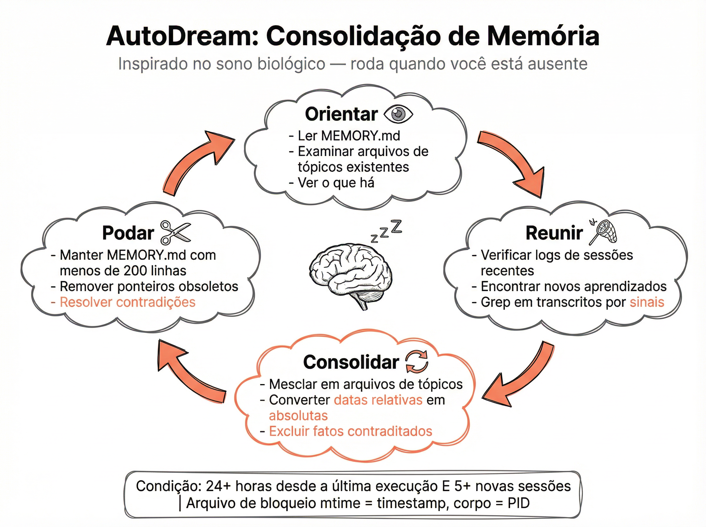

📝 MEMORY.md — O Índice Central da Memória
O coração do sistema de memória é um arquivo chamado MEMORY.md. Ele funciona como um índice leve — aproximadamente 150 caracteres por linha, com no máximo 200 linhas — que é carregado sempre no contexto do agente. Não armazena dados detalhados: apenas aponta para arquivos de tópicos mais específicos, que são buscados sob demanda.

Arquitetura em 3 Camadas
Camada 1 — Índice (MEMORY.md): Sempre em contexto. Linhas curtas com ponteiros para tópicos. Limite rígido de 200 linhas para não inflacionar o prompt
Camada 2 — Tópicos: Arquivos detalhados por assunto (usuário, projeto, feedback). Buscados sob demanda quando o índice indica relevância
Camada 3 — Transcrições: Logs completos de sessões anteriores. Base bruta para consolidação pelo AutoDream
💡 Disciplina de Escrita
O MEMORY.md exige disciplina rigorosa de escrita. O agente só atualiza o índice após a gravação real dos dados nos arquivos de tópicos. Nunca antecipa ou assume — primeiro persiste, depois referencia. Isso evita ponteiros quebrados e garante consistência entre o índice e os dados reais.
👤 Memória do Usuário — Quem Você É
A memória do usuário registra quem você é: seu papel, suas preferências de trabalho, seu nível de expertise e seu estilo de comunicação. Com essas informações, o Claude Code adapta automaticamente a profundidade e o tom das respostas — tratando um desenvolvedor senior de forma diferente de um iniciante.
O Que É Armazenado
Papel profissional: Backend engineer, tech lead, fullstack, devops — influencia vocabulário e profundidade técnica
Nível de expertise: Iniciante recebe mais explicações; senior recebe código direto com trade-offs
Preferências de estilo: Prefere TypeScript ou Go? Testes unitários ou integração? Comentários inline ou documentação separada?
Idioma e tom: Respostas formais vs informais, idioma preferido para comunicação
💡 Adaptação na Prática
Senior pede refactor: Recebe diff direto com análise de trade-offs e impacto em performance
Iniciante pede refactor: Recebe explicação passo a passo, o porquê de cada mudança e links para documentação
DevOps pede deploy: Recebe comandos com flags específicas e verificações de segurança relevantes para infra
💬 Memória de Feedback — Erros e Acertos
A memória de feedback é bidirecional: registra tanto correções (o que deu errado e não deve repetir) quanto confirmações de sucesso (abordagens que funcionaram e devem ser preservadas). Isso cria um ciclo de melhoria contínua — o agente aprende com cada interação.
Feedback Bidirecional
Correções (negativo): "Não use var, use const" — registrado para evitar repetição do erro
Validações (positivo): "Perfeito, sempre faça assim" — registrado para preservar a abordagem
Contexto da correção: Não apenas o que mudou, mas em que situação — para aplicar corretamente em cenários semelhantes
Evolução temporal: Feedbacks recentes têm mais peso que antigos — preferências mudam
✓ Fazer
Confirmar abordagens que funcionaram bem
Corrigir padrões indesejados imediatamente
Explicar o porquê da correção para contexto
Dar feedback específico e acionável
✗ Evitar
Ignorar erros esperando que se corrijam sozinhos
Dar feedback vago como "está errado"
Contradizer feedbacks anteriores sem explicar
Assumir que o agente "já sabe" sem registrar
📋 Memória de Projeto — Trabalho Ativo e Decisões
A memória de projeto rastreia o trabalho ativo: metas correntes, prazos, decisões arquiteturais e estado de tarefas. É o tipo de memória mais dinâmico — muda constantemente conforme o projeto evolui. Um detalhe elegante: datas relativas são convertidas em absolutas para evitar ambiguidade.
O Que É Rastreado
Metas do projeto: Objetivos de alto nível — "migrar para microserviços", "implementar auth OAuth2"
Decisões arquiteturais: Escolhas registradas com justificativa — "PostgreSQL em vez de MongoDB porque relacional"
Estado de tarefas: O que foi feito, o que está pendente, bloqueios identificados
Prazos e marcos: Datas absolutas para entregas e milestones
📊 Por Que Datas Absolutas?
Problema: Você diz "entrega na quinta". Mas qual quinta? A de hoje? Da semana que vem?
Solução: O sistema converte "quinta" para "2026-03-05" no momento do registro
Benefício: Sessões futuras (dias ou semanas depois) ainda entendem o prazo correto
Consistência: Evita que "amanhã" fique eternamente como "amanhã" em memórias antigas
🔗 Memória de Referência — Ponteiros para o Mundo Externo
A memória de referência armazena ponteiros para sistemas externos ao código. O agente sabe onde buscar informações fora do repositório — dashboards de monitoramento, sistemas de tickets, canais de comunicação e documentação externa. São URLs, identificadores e instruções de acesso.
Tipos de Referências
Linear/Jira: IDs de projetos e issues — o agente pode buscar status e detalhes de tarefas
Grafana/Datadog: URLs de dashboards de monitoramento — consultar métricas em tempo real
Slack/Discord: Canais relevantes para notificações e busca de contexto de discussões
Documentação externa: Confluence, Notion, wikis internas — fontes de verdade fora do código
💡 Referências Úteis para Registrar
Dashboard de produção: "Grafana em https://grafana.empresa.com/d/prod — verificar antes de deploys"
Board do projeto: "Linear projeto BACK — sprint atual tem foco em performance"
Canal de alertas: "Slack #prod-alerts — checar antes de investigar bugs reportados"
Documentação de API: "Swagger em /api/docs — fonte de verdade para contratos"
🌙 AutoDream — Consolidação Tipo Sono Biológico
O AutoDream é o sistema de consolidação de memória inspirado no sono biológico. Assim como o cérebro consolida aprendizados durante o sono, o AutoDream processa transcrições de sessões anteriores para extrair, organizar e podar informações na memória persistente. Ele só roda quando há material suficiente para processar: mais de 24 horas desde a última consolidação e mais de 5 sessões novas acumuladas.

As 4 Fases do AutoDream
Orientar
Lê a memória existente para entender o estado atual. Define o que já se sabe e o que falta.
Reunir
Processa transcrições de sessões recentes. Extrai informações novas, feedbacks, decisões e padrões.
Consolidar
Integra novas informações com a memória existente. Resolve conflitos, atualiza fatos e sintetiza padrões recorrentes.
Podar
Remove informações obsoletas, duplicatas e detalhes de baixa relevância. Mantém a memória enxuta e dentro dos limites de tamanho.
📊 Lock File Elegante
Problema: Múltiplas instâncias do Claude Code não podem rodar AutoDream simultaneamente — corromperia a memória
Solução: Um lock file funciona como máquina de estado minimalista
mtime = timestamp: O modification time do arquivo indica quando o lock foi adquirido — sem precisar ler o conteúdo
body = PID: O conteúdo do arquivo é o PID do processo que detém o lock — permite detectar processos mortos e limpar locks órfãos
Elegância: Duas informações em um único arquivo usando metadados do filesystem — zero dependências externas
💡 Team Memory Sync
O AutoDream também suporta sincronização de memória entre membros do time via Team Memory Sync. Cada membro pode compartilhar memórias do projeto com colegas, criando uma base de conhecimento coletiva.
Scanner de segredos: Antes de compartilhar, um scanner automático filtra tokens, senhas e dados sensíveis
Merge inteligente: Memórias de diferentes membros são combinadas sem duplicatas
Contexto compartilhado: Decisões arquiteturais e convenções ficam acessíveis para todo o time
📋 Resumo do Módulo
Último módulo da Trilha 2!
Próximo passo: Trilha 3 — Avançado. Aprofunde seus conhecimentos em técnicas avançadas de uso do Claude Code.